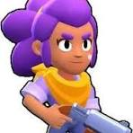
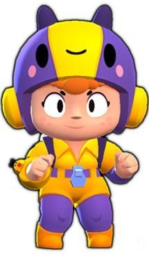
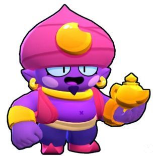

| Foto |
Rareza |
Nombre |
Descripción |
Ataque |
Habilidades y Gadgets |
Habilidad Estelar |
|  |
Común |
Shelly |
Shelly es una Brawler Común que se desbloquea al comenzar el juego. Tiene una salud moderada y una eficacia en cuanto a daño. Su escopeta causa más daño cuanto más cerca está de su objetivo, lo que la hace excelente para el combate de corto a medio alcance. Sus ataques también son extendidos. Su Súper puede derribar varios obstáculos y también derribará y aturdirá a los Brawlers enemigos. |
Daño moderado |
Primer Gadget: Paso al frente - Se lanza en la dirección que está mirando. Segundo Gadget: Tiro al Plato - Aumenta el alcance de su ataque principal y reduce su extensión. |
Primera Habilidad estelar: Choque mate - Ralentiza a los enemigos durante 3 segundos cuando son golpeados por su Super. Segunda Habilidad estelar: Primeros auxilios - Se cura 1800 cuando su salud cae por debajo del 40% y tarda en recargarse 15 segundos. |
|
Especial |
Poco |
Poco es un Brawler Especial que tiene una salud moderadamente alta y la capacidad de proporcionar una curación inmensa a sus compañeros de equipo, pero un daño muy bajo. Para su ataque, Poco toca su guitarra, disparando notas musicales dañinas dentro de un amplio alcance. Su súper dispara una onda musical más grande y más rápida, curándose a sí mismo y a cualquier aliado dentro de su rango. |
Bajo |
Primer Gadget: Diapasón - Emite una onda musical circular a su alrededor que le permite a él y a sus aliados sanar en unos segundos. Segundo Gadget: Canción Protectora - Cura a los aliados de cualquier efecto de estado y protege a los aliados de esos efectos momentáneamente en un gran radio a su alrededor. |
Primera Habilidad estelar: Musicoterapia - Permite que el ataque normal de Poco cure a los aliados que golpea. Segunda Habilidad estelar: Sin playback - Permite que su súper infligir un daño moderadamente bajo a los enemigos que golpea. |
 |
Especial |
El Primo |
El Primo es un Brawler Especial que tiene la segunda vida más alta de todos los Brawler, una alta producción de daño y una gran movilidad con su Súper y su rápida velocidad de movimiento, pero un rango de ataque muy corto. El rasgo de El Primo le permite cargar su súper de los enemigos que lo dañan. Ataca con una ráfaga de puñetazos a corta distancia que infligen un gran daño total. Su súper es un salto que, al aterrizar, inflige daño, empuja a los enemigos hacia atrás y destruye la cobertura. |
Corto |
Primer Gadget: Vuelta de tuerca - Agarra instantáneamente al enemigo más cercano y lo lanza detrás de él. Segundo Gadget: Cinturón de asteroides - Invoca un pequeño meteorito que, al aterrizar, inflige un gran daño, derriba a los enemigos y destruye obstáculos. |
Primera Habilidad estelar: El Fuego - Prende fuego a los enemigos golpeados por su Súper. Segunda Habilidad estelar: Deprisa y corriendo - Aumenta momentáneamente su velocidad de movimiento después de usar su Súper. Hipercarga: Salto Gravitacional - Permite a su Súper atraer a los enemigos al golpearlos con su Súper. |
|
Especial |
Rosa |
Rosa es una brawler Especial que tiene mucha salud y que hace una gran cantidad de daño. Su ataque es una ráfaga de tres golpes de corto alcance con sus guantes de boxeo. Su Super le otorga un escudo de reducción de daño momentáneo pero significativo. Su primer gadget, "Arbustos robustos", genera arbustos a su alrededor. Su segundo Gadget, "Ortigas", ralentiza instantáneamente y daña levemente a todos los enemigos dentro de los arbustos. Su primera Habilidad Estelar, "Naturaleza viva", la cura con el tiempo cuando está dentro de los arbustos. Su segunda Habilidad Estelar, "Guantes punzantes", agrega daño adicional a su ataque mientras su Super está activo. |
Corto |
Primer Gadget: Arbustos robustos - Genera arbustos a su alrededor. Segundo Gadget: Ortigas - Ralentiza instantáneamente y daña levemente a todos los enemigos dentro de los arbustos. |
Primera Habilidad estelar: Naturaleza viva - La cura con el tiempo cuando está dentro de los arbustos. Segunda Habilidad estelar: Guantes punzantes - Agrega daño adicional a su ataque mientras su Super está activo. |
|
Especial |
Barley |
Barley es un robot mesero de rareza Especial que lanza botellas sobre todo a distancia. Su súper es lanzar 5 botellas a la misma vez. Su primer gadget, Mejunje pegajoso, crea un charco pegajoso a su alrededor que ralentiza a los enemigos en el área de efecto. Su segundo gadget Tónicos herbales, arroja botellas a su alrededor y a sus compañeros de equipo que los curan si se paran en los charcos. Su primer poder estelar, Licor curativo, lo cura un poco cuando lanza su botella con su ataque. Su segundo poder estelar, Licor extra nocivo, aumenta el daño de su ataque principal por segundo. Barley y su aspecto de mago se pueden desbloquear de forma gratuita registrándose a Supercell ID. |
Largo |
Primer Gadget: Mejunje pegajoso - Crea un charco pegajoso a su alrededor que ralentiza a los enemigos en el área de efecto. Segundo Gadget: Tónicos herbales - Arroja botellas a su alrededor y a sus compañeros de equipo que los curan si se paran en los charcos. |
Primer Poder Estelar: Licor curativo - Lo cura un poco cuando lanza su botella con su ataque. Segundo Poder Estelar: Licor extra nocivo - Aumenta el daño de su ataque principal por segundo. |
|
SuperEspecial |
Darryl |
Darryl es un Brawler Superespecial que tiene mucha salud y una producción de daño alta pero inconsistente. Su Atributo ayuda a que su Súper se cargue automáticamente con el tiempo. Ataca dando escopetazos que causan un daño muy alto a corta distancia. Su Super le permite rodar una distancia corta, dañar a los enemigos, rebotar en las paredes y obtener un importante escudo de reducción de daño mientras rueda. Su primer Gadget, "Disparos 360", le permite a Darryl girar y disparar una ráfaga de tiros en todas las direcciones a su alrededor. Su segundo Gadget, "Barril de Alquitrán", ralentiza a los enemigos. Su primer Habilidad estelar, "Aros de acero", le otorga un pequeño escudo durante un par de segundos después de usar su super. Su segundo Habilidad estelar, "Recarga rodadora", duplica momentáneamente su velocidad de recarga después de usar su Super. |
Corto |
Primer Gadget: Disparos 360 - Le permite a Darryl girar y disparar una ráfaga de tiros en todas las direcciones a su alrededor. Segundo Gadget: Barril de Alquitrán - Ralentiza a los enemigos. |
Primer Poder Estelar: Aros de acero - Le otorga un pequeño escudo durante un par de segundos después de usar su super. Segundo Poder Estelar: Recarga rodadora - Duplica momentáneamente su velocidad de recarga después de usar su Super. |
|
SuperEspecial |
Carl |
Carl es un robot minero parte de los Brawlers Superespecial. Tiene una salud moderadamente alta y una producción de daño moderada. Cuando ataca, Carl golpea con su pico, dañando y atravesando a cualquier enemigo golpeado mientras el pico vuela hacia adelante o regresa a Carl, y consume su única munición que se recarga cuando el pico regresa. Su súper lo hace girar como un loco con su pico, duplicando su velocidad de movimiento y permitiéndole dañar a los enemigos a los que se acerca durante su duración. Su primer Gadget, "Rocas volcánicas", suelta un rastro de rocas calientes detrás de él que incendia a los enemigos que las tocan. Su segundo Gadget, "Gancho remolcador", hace que el próximo ataque de Carl lo lleve al punto más lejano de su alcance. Su primera Habilidad estelar, "Lanzamiento veloz", aumenta la velocidad de su pico, disminuyendo efectivamente su tiempo de recarga. Su segunda Habilidad estelar, "Pirueta protectora", le otorga un escudo que reduce el 30% del daño cuando esta usando su súper. |
Medio |
Primer Gadget: Rocas volcánicas - Suelta un rastro de rocas calientes detrás de él que incendia a los enemigos que las tocan. Segundo Gadget: Gancho remolcador - Hace que el próximo ataque de Carl lo lleve al punto más lejano de su alcance. |
Primer Poder Estelar: Lanzamiento veloz - Aumenta la velocidad de su pico, disminuyendo efectivamente su tiempo de recarga. Segundo Poder Estelar: Pirueta protectora - Le otorga un escudo que reduce el 30% del daño cuando esta usando su súper. |
|
SuperEspecial |
Jacky |
Jacky es una Brawler parte de los Brawlers Superespecial que se puede conseguir en las Cajas Brawl. Tiene una salud alta y una producción de daño moderadamente alta pero inconsistente. Tiene un rasgo que le permite cargar su súper de los enemigos que la dañan. Ataca con su martillo neumático, que rompe el suelo e instantáneamente inflige daño en un área circular a su alrededor. Su súper atrae enemigos en un gran radio. Su Gadget, "Subidón neumático", aumenta brevemente su velocidad de movimiento. Su primer Habilidad Estelar, "No hay de qué", refleja una parte del daño que recibe en un rango mediano a su alrededor. Su segunda Habilidad Estelar, "Casco blindado", reduce pasiva y levemente todo el daño que recibe durante toda la duración de la partida. |
Alto |
Gadget: Subidón neumático - Aumenta brevemente su velocidad de movimiento. |
Primer Habilidad Estelar: No hay de qué - Refleja una parte del daño que recibe en un rango mediano a su alrededor. Segunda Habilidad Estelar: Casco blindado - Reduce pasiva y levemente todo el daño que recibe durante toda la duración de la partida. |
|
Épica |
Penny |
Penny es una Brawler parte de los Brawlers Épicos que puede colocar un mortero cuando usa su Super. Tiene una salud media y un daño muy alto. Su ataque de largo alcance puede golpear a los enemigos detrás del objetivo original para causar daño adicional. |
Alto |
Gadget: Mieles finales - Despliega una colmena que crea miel pegajosa a su alrededor, ralentizando a los enemigos que entran en su área de efecto. |
Primer Habilidad Estelar: Explosión final - Su cañón dispara 4 balas de cañón que apuntan a objetos / luchadores dentro de un rango enorme después de ser destruidas o reaparecidas, haciendo 1680 de daño a los enemigos que son golpeados. Segunda Habilidad Estelar: Bolas de fuego - Sus balas de cañón incendian el suelo durante 3 segundos, infligiendo 400 de daño por segundo a los enemigos en el área en llamas. |
 |
SuperEspecial |
Rico |
Rico es un Brawler Superespecial que se asemeja a una máquina expendedora de chicles. Posee un largo alcance, un potencial de daño alto y vida baja. Su primer Gadget, "Parque de Bolas", dispara dos ráfagas rápidas de bolas hacia 8 direcciones. Su segundo Gadget, "Castillo inflable", hace que su siguiente ataque lo cure cada vez que rebote. Su primera Habilidad Estelar, "Superrebote", permite que las balas de Rico hagan más daño cuando estas rebotan en un muro. Su segunda habilidad Estelar, "Retirada Robótica", permite a Rico moverse rápidamente cuando tiene poca vida. |
Alto |
Gadget: Parque de Bolas - Dispara dos ráfagas rápidas de bolas hacia 8 direcciones. Segundo Gadget: Castillo inflable - Hace que su siguiente ataque lo cure cada vez que rebote. |
Primer Habilidad Estelar: Superrebote - Las balas de Rico hacen más daño cuando rebotan en un muro. Segunda Habilidad Estelar: Retirada Robótica - Permite a Rico moverse rápidamente cuando tiene poca vida. |
|  |
Épica |
Bea |
Bea pertenece al trío de la naturaleza. Es una Brawler Épica Destructora que lanza abejas. Su ataque de un solo disparo hace más daño cuando está más lejos de un enemigo, por lo que sobresale como francotiradora. Su Súper le permite saltar lejos de sus enemigos y dañarlos a medida que avanza. Su primer Gadget, "Mieles finales", despliega una colmena que crea miel pegajosa a su alrededor, ralentizando a los enemigos que entran en su área de efecto. Su segundo Gadget, "Colmena agitada", envía 3 abejas que se mueven en espiral hacia afuera desde ella que dañan a los enemigos dependiendo de su distancia de viaje. Su primer Habilidad Estelar, "Abeja reina", le da una segunda oportunidad de disparar su disparo sobrecargado. Su segunda Habilidad Estelar, "Panal", le da un escudo que reduce el daño en un 20% cada vez que tiene un disparo sobrecargado listo. |
Moderado |
Gadget: Mieles finales - Despliega una colmena que crea miel pegajosa a su alrededor, ralentizando a los enemigos que entran en su área de efecto. Segundo Gadget: Colmena agitada - Envía 3 abejas que se mueven en espiral hacia afuera desde ella que dañan a los enemigos dependiendo de su distancia de viaje. |
Primer Habilidad Estelar: Abeja reina - Le da una segunda oportunidad de disparar su disparo sobrecargado. Segunda Habilidad Estelar: Panal - Le da un escudo que reduce el daño en un 20% cada vez que tiene un disparo sobrecargado listo. |
|
Épica |
Nani |
Nani es una Brawler Épica con poca salud pero el potencial de causar mucho daño desde una gran distancia. Su ataque principal de un solo disparo hace más daño cuando está más lejos de un enemigo. Su Súper convoca a un dron volador llamado Peep que Nani puede dirigir manualmente hacia los enemigos y explota al contacto, infligiendo un gran daño y empujando a los enemigos. Su primer Gadget, "Estallido teletransportador", se teletransporta a la ubicación actual de Peep durante su súper. Su segundo Gadget, "Devolver al remitente", protege parcialmente a Nani de un solo proyectil que se convierte en un contraataque. Su primera habilidad estelar, "Foco automático", agrega daño adicional a su súper a medida que viaja. Su segunda habilidad estelar, "Acero templado", le otorga a Nani un escudo que reduce el daño cuando Peep está activo. |
Bajo |
Gadget: Estallido teletransportador - Se teletransporta a la ubicación actual de Peep durante su súper. Segundo Gadget: Devolver al remitente - Protege parcialmente a Nani de un solo proyectil que se convierte en un contraataque. |
Primer Habilidad Estelar: Foco automático - Agrega daño adicional a su súper a medida que viaja. Segunda Habilidad Estelar: Acero templado - Le otorga a Nani un escudo que reduce el daño cuando Peep está activo. |
 |
Épica |
Pam |
Pam es una Brawler Épica con un ataque que lanza pequeñas tuercas que infligen daño al enemigo. Su Súper es una torreta que la cura a ella y a sus aliados. Su primer gadget hace que su torreta cure 1200 puntos de salud a los aliados dentro de su área de efecto. Su segundo Gadget, "Absorbechatarra", permite que cada pieza de chatarra de su próximo ataque principal elimine la munición de cualquier Brawler que golpeen mientras restaura la munición de Pam. Su primera Habilidad Estelar, "Zona de confort", le permite curarse ligeramente a sí misma y a los aliados dentro del alcance cada vez que golpea a un enemigo con una bala de su ataque principal. Su segunda habilidad Estelar, "Curación destructiva", permite que su torreta de curación haga daño a los enemigos dentro de su área de efecto. |
Alto |
Gadget: Torreta curativa - Cura 1200 puntos de salud a los aliados dentro de su área de efecto. Segundo Gadget: Absorbechatarra - Permite que cada pieza de chatarra de su próximo ataque principal elimine la munición de cualquier Brawler que golpeen mientras restaura la munición de Pam. |
Primer Habilidad Estelar: Zona de confort - Le permite curarse ligeramente a sí misma y a los aliados dentro del alcance cada vez que golpea a un enemigo con una bala de su ataque principal. Segunda Habilidad Estelar: Curación destructiva - Permite que su torreta de curación haga daño a los enemigos dentro de su área de efecto. |
 |
Épica |
Piper |
Piper es una Brawler Épica con poca salud pero el potencial de causar un daño muy alto a sus objetivos. Su ataque principal de un solo disparo hace más daño cuando está más lejos de un enemigo. Su Súper le permite saltar lejos de sus enemigos y dañarlos a medida que avanza. Su primer habilidad estelar, "Emboscada", le permite hacer 800 daños adicionales en su alcance máximo cuando está en un arbusto y su segunda habilidad estelar, "Acierta y vencerás", se le recargara 0.4 municiones cuando golpea a un enemigo. |
Bajo |
Gadget: Ninguno |
Primer Habilidad Estelar: Emboscada - Hace 800 daños adicionales en su alcance máximo cuando está en un arbusto. Segunda Habilidad Estelar: Acierta y vencerás - Se recargará 0.4 municiones cuando golpea a un enemigo. |
|  |
Mítico |
Genio |
Genio es un Brawler Mítico que tiene una salud y daño moderados. Ataca con magia que sale de su lámpara y su súper es una mano que agarra a los enemigos y los trae a Genio. Su primer gadget, Lampara quemada, hace retroceder a todos los enemigos cercanos y cura a él mismo una pequeña cantidad. Su segundo Gadget, Espíritus Vengativos, dispara múltiples proyectiles que apuntan a los enemigos dentro del alcance y aumentan el daño a medida que viajan. Su primera Habilidad Estelar, Curación mágica, cura ligeramente a sus aliados con el tiempo cuando están cerca de él. Su segunda Habilidad Estelar, Espíritu enfadado, aumenta el daño de su ataque cuando su Super está cargado. |
Moderado |
Gadget: Lampara quemada - Hace retroceder a todos los enemigos cercanos y cura a él mismo una pequeña cantidad. Segundo Gadget: Espíritus Vengativos - Dispara múltiples proyectiles que apuntan a los enemigos dentro del alcance y aumentan el daño a medida que viajan. |
Primer Habilidad Estelar: Curación mágica - Cura ligeramente a sus aliados con el tiempo cuando están cerca de él. Segunda Habilidad Estelar: Espíritu enfadado - Aumenta el daño de su ataque cuando su Super está cargado. |
|
Mítica |
Max |
Max es una Brawler Mítica con una salud moderada, un daño moderado y una velocidad de movimiento muy rápida. Para su ataque, Max dispara rápidamente 4 proyectiles de largo alcance en una ligera extensión. Su Súper aumenta momentáneamente la velocidad de movimiento de ella y sus aliados cercanos. |
Moderado |
Gadget: Empuje poderoso - La hace abalanzarse en la dirección en la que mira y gana un escudo de inmunidad mientras se abalanza. |
Primer Habilidad Estelar: Súper cargado - Carga automáticamente su Super mientras se mueve. Segunda Habilidad Estelar: ¡Corre y vuela! - Aumenta su velocidad de recarga mientras se mueve. |
|
Épico |
Gale |
Gale es un Brawler Épico, siendo también el primer Brawler Cromático, rareza actualmente eliminada, es un manitas que trabaja en el Snowtel de Señor P junto a Lou. Gale ataca con seis bolas de nieve y su súper lanza un vendaval que lanza muy lejos hacia atrás a los rivales. |
Alto |
Primer Gadget: Propulsor Aéreo - Genera una plataforma de lanzamiento debajo de él que puede lanzar cualquier objetivo. Segundo Gadget: Tornado - Crea un tornado que evita que los enemigos lo atraviesen. |
Primer Habilidad Estelar: Golpe Tempestuoso - Hace que los enemigos que son empujados hacia los obstáculos queden aturdidos momentáneamente. Segunda Habilidad Estelar: Nieve Glacial - Ralentiza brevemente a los enemigos golpeados por su ataque. |
|
Legendario |
Surge |
Surge es un Brawler fiestero Legendario que se podía desbloquear como una recompensa de Brawl Pass en el nivel 30 de la Temporada 2: Verano monstruoso o puede desbloquearse desde las Ruta estelar. Tiene poca salud pero un daño alto y un alto daño de ráfaga, ya que puede disparar sus ataques con bastante rapidez. Su ataque principal dispara una bebida que se divide al golpear a un enemigo. Su Súper es un salto en el aire, infligiendo daño y empujando a los enemigos, y también otorgándole varias mejoras a sus ataques y velocidad de movimiento. |
Alto |
Gadget: Hiperactividad - Mejora +1 nivel instantáneamente durante 10 segundos. |
Primer Habilidad Estelar: Maxiboom - Permite que sus proyectiles se dividan en 2 al chocar contra una pared. Segunda Habilidad Estelar: Ataque refrescante - Hace que Surge reaparezca con su mejora de su primera mejora en lugar de volver sin ninguna. |